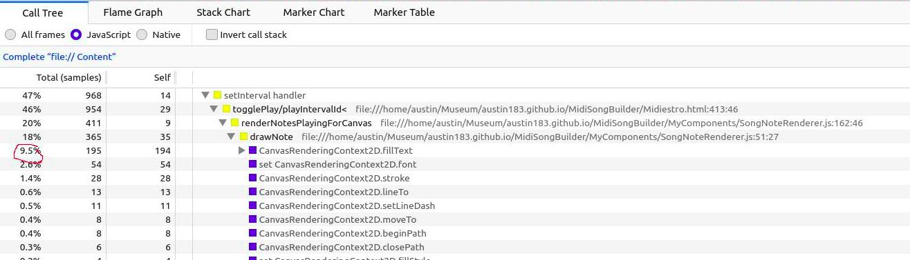
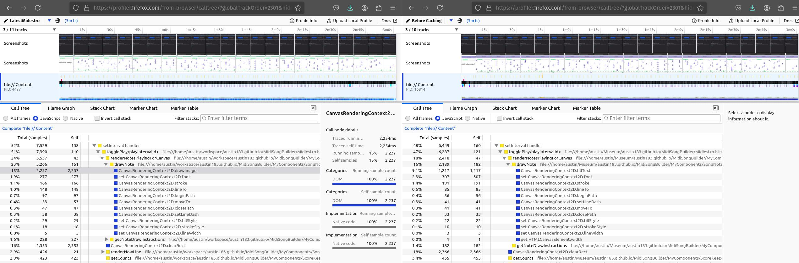
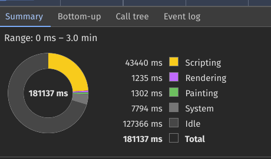
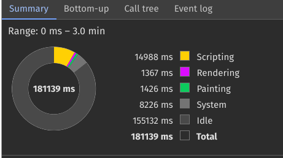
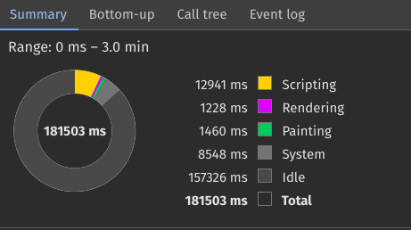

I felt like I had optimized my own code pretty well, and I was running out of ideas on what I could improve there. So I decided to take another look at the Performance Profiler in Firefox and Chromium and see what else could be hogging so much of that 10 millisecond interval.
In Firefox 132, if you open the Web Developer Tools (F12), and go to the Performance tab, you can record a website's performance profile for a period of time. I would start the profiler and play a song and then review the results to see what was taking up so much time. Here is how the Firefox Profiler showed the game after the modest optimizations from the day before:

I circled the part that I was going to try to reduce first. The way the screen reads, I think, is that 47% of total processing time during the game was spent in the interval. Within that 47%, 9.5%, or roughly 1/5 of the processing time was spent drawing the letters to the screen. This seemed like something I could take a look at. I remembered earlier when I was developing the song renderer, I may need to cache each letter to keep it from having to reprocess the letter each time, but I didn't understand what the letters were at the time to make a difference.
I started Googling ways to reduce the time spent drawing the letters to the canvas, and I came across this code that does just that. It was such a great find on Stack Overflow from Simon Sarris.
Thank you, Simon!I implemented the change in this commit. There were some other optimizations to try to get pre-rendered draw instructions, but overall, that change did not make a big difference.
The game plays better after the caching changes, but when I look at the Profiles between the version before caching and after caching, I am confused by the results. I expected the % for canvas draws to go down after the cache changes, but they actually went up:

I think perhaps I misunderstood what the Firefox Profiler was telling me. Maybe that is the percentage of overall samples taken during the recording, and the higher number means there were more drawImage calls to sample because they happened so much more often... I am really not sure. I will need to look at the performance tools in Chromium and see if they make it clearer why the caching made such a difference.
I think I understand what the Chromium Profile is telling me more than the Firefox one, but I could still be mistaken in my analysis. I went ahead and captured results for 3 instances of the game. Here they are side by side for comparison.
| Before Optimizations | After Optimizing by Reducing Loops | After Optimizing by Caching Prerendered Notes |
|---|---|---|
|  |  |  |
Looking at the comparison between the three versions, it looks like I got the most savings in scripting time from reducing the number of loops and iterations. The prerendered notes look like they improved the scripting time slightly. I am surprised the painting and rendering time remained constant. The rendering time was the lowest on the prerendered version, but a 100 milliseconds out of the whole 3 minutes were probably not that big of a concern. I think what really helped was the background scheduling. Since the scripting was using so much less time in the later iterations, there was more time per interval for the sounds to play at the expected time and the frames to render before the next interval. The idle time vs total time went up in each iteration, which is good for everyone. That means there is more headroom for lower spec machines to play the game at the intended framerate, and there are lower odds of stutters for all machines.
The game finally played the way I wanted it to play! It didn't have any flashy bells and whistles. It would not try to hook players psychologically with endorphin inducing animations or spectacles in order to suck hours away from other important games they were playing. It would just play satisfyingly, and player could spend minutes or hours playing depending on how they felt.
Despite my efforts to make the game play as smoothly as possible, everyone bounced off the game because I was still neglecting a serious aspect. Players were not ready to play because there were no songs out of the box. Sure, there were instructions on how to get songs and then load them into the game, but I was giving people a huge reason to not invest time trying the game out. If I, the developer, could not be bothered to provide a song to play, why should the player be bothered to do it? They had other games that came ready to play. The best response I got from friends was, "I am going to set aside time to play, but I will need to set it up first."
I would not even acknowledge the problem for another few days. I am kicking myself in hindsight now, because some people I introduced to the game to early may have bounced off and will never go back to see it.